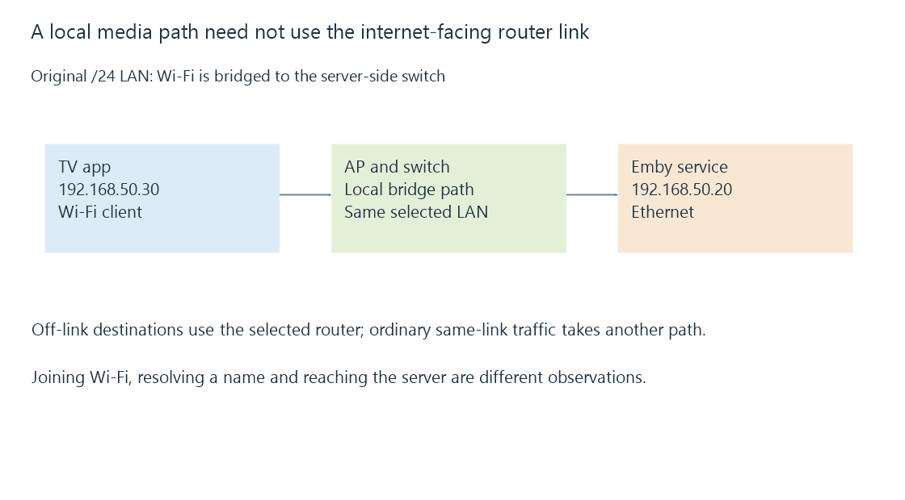

How a home media network carries an Emby stream
A home media network carries requests and media between Emby Server and client apps through local links and any routed boundaries in their selected path.
A television app asks Emby Server for a presentation. The server prepares the selected media and sends it back over the connection the app established.
Within a home, that path can be much shorter than “up to the internet and back.” The devices, link arrangement and chosen endpoint determine where the traffic goes.
Trace the local stream
Use this original network:
| Device | Address | Connection |
|---|---|---|
| Emby Server | 192.168.50.20 | Ethernet to a switch |
| TV app | 192.168.50.30 | Wi-Fi through an access point |
| Router | 192.168.50.1 | Connects this LAN to other networks |
Assume both end devices use the same ordinary IPv4 /24 LAN, and the access point bridges Wi-Fi to the switch.

The app’s packets for 192.168.50.20 go over Wi-Fi, through the access point and switch, to the server. They do not need the router’s internet-facing connection.
A household “router” box can contain a router, switch and wireless access point together. Traffic passing through its switch or Wi-Fi hardware is not necessarily being routed to the internet.
Address resolution selects a local next hop
An IPv4 host uses its address/prefix and routes to decide whether the destination is on its local link. For an ordinary local destination, ARP resolves the link-layer address needed to send the frame.
For an off-link destination, the host instead sends the frame toward the selected router. The IP destination remains the remote host; the next-hop frame address identifies the router for that link.
IPv6 uses Neighbor Discovery for its corresponding link relationships. The underlying distinction is the same: the final IP destination and the next hop are different roles.
Subnets and routes develops the prefix calculation.
The media request and media payload have different sizes
Selecting a title, requesting a playlist and reporting playback state can involve small messages. Delivering the media usually accounts for much more traffic.
An app showing posters and browsing a library has therefore established some successful communication, not a measurement of sustained streaming capacity. A media request can also choose another resource URL or begin a different connection.
Server delivery explains what the server prepares. The network transports that result; it does not decide whether the video must be transcoded merely because the TV uses Wi-Fi.
A Wi-Fi association is only one completed step
The TV can join its access point yet lack a permitted path to the server. A guest network, separate routed segment or client-isolation rule can change the topology.
| Established observation | Remaining question |
|---|---|
| TV joined Wi-Fi | Does its segment permit the server path? |
| Name resolved | Is the returned address reachable from this client? |
| Connection established | Does the requested application operation succeed? |
| Short request succeeded | Can the route sustain the selected media delivery? |
Emby’s connectivity documentation separates local access from external reachability. Knowing which boundary the request actually crosses makes those checks more precise.
See Also
- Local and remote connections to Emby
- IP addresses and reachable interfaces
- DNS resolution, record types and cached answers
- Network ports, listeners and connection endpoints